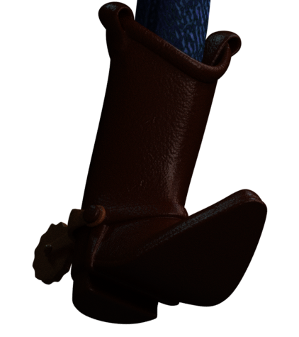

Created by Rendew. Woody © Disney/Pixar
Woody Run Pose
August 12, 2022

Overview
One day, I realized that Woody's previous surfacing had been good, but didn't look the way I wanted. I sighed and realized this meant surfacing Woody for the 6th time. I chose a good pose for Woody, inspired by the posters for the first Toy Story. After posing him, I went through all his materials, fixing them up as much as I could. His hat was completely ruined. I also did the lighting.

What's a Sheriff Without His Hat?
After going through all his materials, I collected reference images from all the Toy Story movies and analyzed them. How rough was the material? How much did it reflect? How diffused was the reflection? What color does it reflect? Does it have a repeatable pattern? Does it have variance throughout the material? How can I make the variance? What are the properties of the variance? How much does the material vary? I had to ask myself all these questions before starting any surfacing.
The first material I redid was his hat, because I had ruined it, and it looked so bad. I fixed the subsurface scattering, the roughness and the scratches. After wrestling with it for a long time, it finally looked the way I wanted; a deep chocolate, bendable, plastic color with scratches that don't make it look like it's water damaged.
I've Got a Jean!
Woody's jeans were a tough case to crack. The texture I was using was really low-quality. After color correcting the texture, it looked like it had a sheet of blue over it. I color corrected it again, and saturated the image so you could see the lines more easily. I also made the darks more dark. However, the texture was overriding the viewer's view of the actual bump of the denim. I was not sure what to do with that. I also added sheen to the denim, to help along the feeling of soft cotton denim. It didn't do much, but that's okay because the actual cloth hair will do the trick.
Playing with Plaid
Woody's shirt definitely needed a makeover. The bump I was using before, was way too much, due to the use of a solid white dome-light, which made all the shadows grey, instead of black. In order to compensate, I made the bump of his shirt way more than it should. In this new surfacing, I had not used a solid white dome-light because it ruined the color and gave the image an old look. After analyzing the reference images from Toy Story 4, I found that his shirt was made from 100% cotton, with a twill weave to the fabric. My Woody did not have any actual threads to his cloth (which gave it a low quality, blurry look), so I decided this was the time. I wrote an OSL shader to take care of the normals and tested it out on a dummy-Woody.
I then integrated the OSL shader onto Woody's cloth, both his vest and his shirt. I also fixed the bump, reflection and color of the plastic around Woody's vest. After playing with the amount of bump, I finally reached something I wanted. I also fixed the shininess of his shirt. (yes, cloth is shiny!)


Under the Surface
Subsurface scattering is a big part of the real world and Woody. Woody's face and hands are made of polyvinyl plastic, which has a soft squishy look. Subsurface scattering (SS) gives that soft squishy look. I added SS to all of Woody's materials, but ran into a problem when it came to his face and hands. His face and hands use the same material, but Woody's face has an inside and an outside to the mesh because he has a mouth. In other words, Woody's face has an extra layer of polygons. This prevented light from traveling through his face, and therefore omitting the SS effect. I could turn up the SS to accommodate that, but then his hands would get over-exposed. I tried to create a different material for his face, but for some reason, his face ended up dark and strange-looking, even though the materials were identical. I had to revert back to the original material and choose a middle ground between his hands and his face.
The difference between the SS in his hands and his face are noticeable.
A problem also occurred when adding Subsurface Scattering to Woody's clothes. Weird green splotches would appear where black shadows should be. I thought it was because I was color-correcting the texture that drove the SS, but when I changed it, it was still green. After a long time, I gave up, it wasn't that noticeable anyway.
Belt it Out
After a while, I realized that Woody's belt looked a little strange. From different angles it would act like it was facing a different direction. This was clearly a normal map problem, and I quickly fixed it. I added different normal maps and fixed the color, Subsurface scattering and roughness.
The Badge of Honor
I also added Subsurface Scattering to Woody's Sheriff badge. I fixed the roughness and bump of the badge as well. In Toy Story, Woody's sheriff badge bumps out at the words "SHERIFF" but I couldn't find a way to create a normal map without redoing the UVs of his badge, or even worse, his whole body.
The Spot for a Bandana
For a long time, the spotty designs on Woody's bandana were not as white as they should be. Instead they were an ugly grey color. I couldn't fix it before, because correcting the color of the designs would ruin the red color of the rest... or would it? In photoshop I deleted the red, leaving transparency where they had been. I used this as a mask to edit the color of only the designs.
Making it Normal
When analyzing my reference images, I realized that Woody didn't have any wrinkles in his cloth, much less any variation in the height of his cloth. Instead of doing expensive cloth simulations, or anything else those wizards at Pixar do, I decided I could just use normal maps. After layering a ton of normal maps, it looked like this:
(picture of graph)
I layered some more normal maps for his vest, bandana, and his jeans too.
Booting In
Woody's boots have stayed pretty much the same, since the first time I surfaced Woody. After consulting with my reference, I realized that Woody's boots have little tiny bumps, cactuses, and ropes on them. I fixed the Subsurface scattering and the color of his boots before adding cactuses and ropes to his normal map. I also added little tiny bumps, but I made them bigger later. The bumps on Woody's boots are pretty big, but the ones I gave Woody's boots make them look like dinosaur skin. They look fine from far away, so I'm not sure what to think. I also layered a ton of scratch normal maps on his boots.

Looking at Things Up Close
My reference images suggested that Woody has a lot of tiny micro-scratches on his eyes. After adding Subsurface scattering and fixing the gloss, I wrote an OSL shader to take care of the micro-scratches.
The micro-scratches are too small to see in this image.
Comb it Back
When looking at Woody's hair, it looked just solid and boring. After checking my reference, I saw that Woody's hair has slight waviness to it, like an old window or the skin of an apple. It also has tiny brush marks from the paint, and tiny scratches. After adding all of that, I added Subsurface scattering and fixed the roughness.
Buckle Up!
After fixing the Subsurface scattering of Woody's belt buckle, I saw that the normal map with the cow design wasn't as deep as it should be. I just layered the normal map on itself to fix it. I also added a metal shader to the little hinge that holds on Woody's holster, and created a gem shader for the red gem on Woody's holster.
Although Woody's materials aren't as accurate or realistic as I'd like them to be, I'm still very pleased with the results!